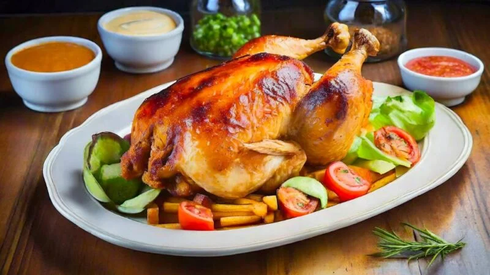

Milanesas

Descripción
El pollo a la brasa es un plato peruano emblemático y sumamente popular tanto a nivel nacional como internacional.
Se trata de una forma única de preparar pollo asado, caracterizado por su sabor distintivo y jugosidad.
En Perú, disfrutar de este platillo es más que una simple comida; es un evento social, familiar o de celebración.
Los restaurantes especializados en este plato suelen ser bastante celosos de su receta.
Este plato ha ganado reconocimiento mundial. Hoy en día se encuentra en diversas partes del mundo,
deleitando a personas de diferentes culturas con la exquisita fusión de sabores que ofrece el pollo a la brasa peruano.
Ingredientes
- 1 pollo entero (aproximadamente 2 kg)
Para marinada:
- 4 dientes de ajo picados
- 2 cucharadas de pasta de ají panca (o ají amarillo)
- 2 cucharadas de vinagre de manzana
- 2 cucharaditas de comino molido
- 1 cucharadita de pimienta negra
- 1 cucharadita de paprika
- Sal a gusto
- 2 cucharadas de aceite vegetal
Pasos
- En un bol mezclar todos los ingredientes de la marinada hasta obtener una pasta homogénea.
- Realizar cortes profundos al pollo y cubrirlo por completo con la marinada. Dejar marinar en el refrigerador al menos 4 horas. Precalentar parrilla u horno a temperatura alta.
- Cocinar el pollo a la brasa, girando ocasionalmente para asegurar una cocción uniforme, durante aproximadamente 1 hora. Ir chequeando la cocción en la carne.
- Servir el pollo a la brasa peruano con la guarnición clásica elegida como papas fritas y ensalada.
Home